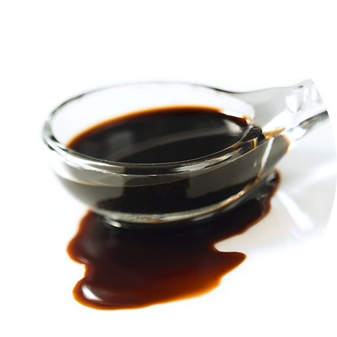

바이오중유
기존 벙커-C 대체연료로써 석유류가 아닌 캐슈넛오일, 팜오일 그 외 동,식물성유지로 혼합 및 제조한 친환경 연료를 뜻합니다. 2012년 신재생에너지 의무공급화제도(RPS제도) 시행에 따라, 공급의무자인 발전사의 거시적인 도입을 추진하기 위하여 바이오중유를 신재생에너지로 정의하고 2014년 1월 산업통상자원부에서 보급추진에 관한 고시가 제정되었습니다.

| 항목 | 품질기준 | 항목 | 품질기준 |
|---|---|---|---|
| 인화점(℃) | 70 이상 | 동점도(40℃,㎟/s) | 15 이상 ~ 80 이하 |
| 잔류탄소분(무게%) | 10 이하 | 황분(무게%) | 0.05 이하 |
| 회분(무게%) | 0.10이하 | 동판부식(50℃,3h) | 1 이하 |
| 유동점(℃) | 27 이상 | 밀도(15℃,kg/㎥) | 991 이하 |
| 수분(무게%) | 0.30 이하 | 전산가(mg KOH/g) | 25 이하 |
| 알칼리금속 Na (mg/kg) | 70 이하 | 알칼리금속 Ca (mg/kg) | 30 이하 |
| 알칼리금속 K (mg/kg) | 70 이하 | 요오드가(g/100g) | 120 이하 |
| 질소(무게%) | 0.3 이하 | 바나듐(mg/kg) | 50 이하 |
| 총발열량(kcal/kg) | 9,000 이상 | 물과침전물(부피%) | 0.5 이하 |
| 실리콘+알루미늄+철(mg/kg) | 200 이하 | 인(mg/kg) | 100 이하 |
발전용 바이오중유는 발전용 보일러의 연료로서 다음의 품질기준에 적합하여야 한다.